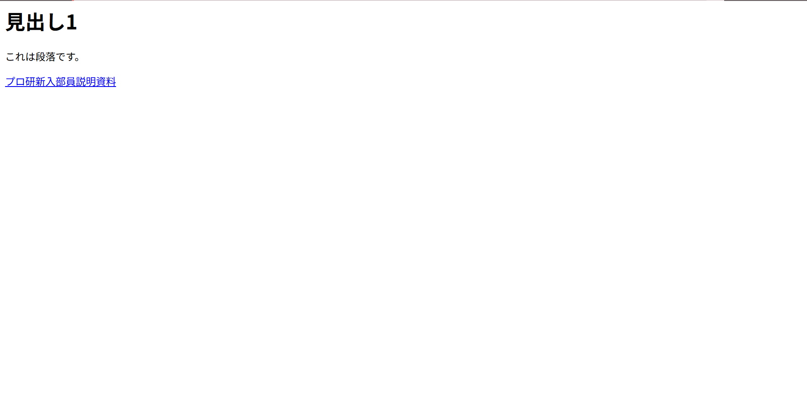
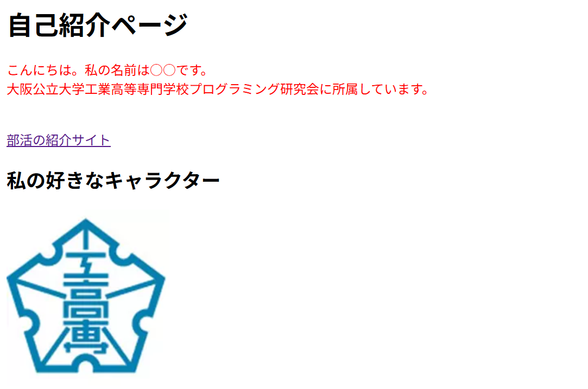

1 本日の内容
今回はHTMLとCSSという、Webサイトを作るための言語について学びます。前回の資料の最後にも説明しましたが、HTMLはWebサイトの構造を作るための言語で、<はWebサイトの見た目を整えるための言語 CSSはWebサイトの見た目を整えるための言語という、になります。この章を通じて、VS Codeの操作にも慣れていきましょう。
2 準備と復習
今回もVS Codeを使うのですが、以下の拡張機能を入れておいてほしいので、ダウンロードをお願いします。ダウンロードできたら一度閉じてもらって構いません。拡張機能のインスト―ル方法は第2回資料 2.3 拡張機能のインストールを参考にしてください。
- ritwickdey.liveserver
- anteprimorac.html-end-tag-labels
- formulahendry.auto-rename-tag
- cmel.vscode-html-css
html_lectureという名前でフォルダを作成してください。完成したらフォルダを右クリックしCodeで開くでVS Codeを開いてください。VS Codeでフォルダを開くと、左側のエクスプローラに先ほど作成したフォルダが表示されると思います。次回以降はこのフォルダの中にHTMLやCSSのファイルを作成していきます。
今回の講義以降すべてにおいて共通のルールなのですが、プログラムを書く・変更するときは必ず使用したファイルすべてを保存
Ctrl+Sキーしてください。保存しないと期待した通りの結果が得られません。
3 HTMLについて
HTMLはWebサイトを作るための言語と最初に説明したと思います。プログラミング研究会で使っているこの資料もHTMLとCSSを用いて作られています。このように静的な（動きのない）Webサイトを作るための言語がHTMLとCSSになります。
3.1 HTMLの基本構造
HTMLのコードはタグで構成されていて、タグは<タグ名>のように書きます。タグには開始タグと終了タグがあって、終了タグは開始タグの前にスラッシュ（/）をつけて</タグ名>のように書きます。HTMLのコードはこの開始タグと終了タグで囲まれた部分が意味を持ちます。
先ほど開いたVS Codeで画面左上のマークからmain.htmlという名前でファイルを作成してください。htmlを使うときの拡張子は.htmlです。続いて、htmlと入力してください。すると変換候補にhtml:5というものが出てくると思います。これを選択すると、HTMLの基本構造が自動で入力されます。HTMLのコードはこのようにVS Codeの機能を使うと簡単に書くことができます。
<!DOCTYPE html>
<html lang="en"> <!-- このサイトの言語を選択 -->
<head>
<meta charset="UTF-8">
<meta name="viewport" content="width=device-width, initial-scale=1.0">
<title>Document</title> <!-- このサイトのタイトルを入力するとこ -->
</head>
<body>
<!-- ここに本文を入力 -->
</body>
</html>このコードの意味は以下の通りです。
<!DOCTYPE html>はこのファイルがHTMLで書かれていることを宣言するためのコードです。<html lang="en">はこのサイトの言語を指定するためのコードです。日本語の場合はlang="ja"と書きます。<head>と</head>で囲まれた部分はこのサイトの情報を入力する場所になります。ここにはサイトのタイトルや、サイトの見た目を整えるためのCSSファイルのリンクなどを入力します。<body>と</body>で囲まれた部分はこのサイトの本文を入力する場所になります。ここに見出しや段落、画像などを入力していきます。
3.2 HTMLのタグ
HTMLのコードはタグで構成されていると説明しましたが、タグには様々な種類があります。今回は基本的なタグをいくつか紹介します。
<h1>から<h6>は見出しを作るためのタグです。数字が小さいほど大きな見出しになります。<p>は段落を作るためのタグです。<img>は画像を表示するためのタグです。<a>はリンクを作るためのタグです。
<h1>見出し1</h1>
<p>これは段落です。</p>
<a href="https://omuct-proken.github.io/lesson/">プロ研新入部員説明資料</a>これで作成したページを確認するために画面右下のGO Liveを押してください。しばらくすると
http://127.0.0.1:5500のような形でリンクが表示されるので、それをクリックしブラウザ（Chromeなど）で開いてください。すると、以下のようなページが表示されると思います。

これがHTMLのタグを使って作成したWebサイトになります。見出しや段落、リンクが表示されていると思います。これらはすべてHTMLのタグを使って作成されています。
演習１
HTMLのタグを使って、以下のようなWebサイトを作成してみましょう。(フォントは気にしなくて構いません。)自己紹介ページ(h1タグ)
こんにちは。私の名前は○○です。
大阪公立大学工業高等専門学校プログラミング研究会に所属しています。
部活の紹介サイト
私の好きなキャラクター(h2タグ)
(下の画像は好きなキャラクターに変更してください)
チェックリスト
- タイトルの文字は大きくなっているか
- 適切な位置で改行されているか
ヒント：改行するにはとあるタグを使います。（調べてみましょう） - 部活の紹介サイトを押すと
https://www.ct.omu.ac.jp/campuslife/club/intro-programming-club/index.htmlが開くか - 自分の表示したい画像が表示されているか
- 大阪公立大学工業高等専門学校プログラミング研究会が太字で表示されているか
すべての項目をクリアした人は次章に進んでください。もししらべてもわからないところは、部長やほかの人に聞いて完成させましょう。
CSSについて
CSSはWebサイトのデザインを行うための言語と最初に説明したと思います。プログラミング研究会で使っているこの資料もHTMLとCSSを用いて作られています。先ほどの章でHTMLコードを書いてもらいましたが、文字の色は全部黒で、サイズや色は変えれなかったと思います。ここからはCSSを使って、文字の色やサイズを変えていきましょう。
4.1 CSSの基本構造
CSSの基本的な構造は、セレクタ と宣言の組み合わせです。セレクタはHTML要素を指定し、宣言はその要素のスタイルを定義します。main.htmlを作った時同様、画面左上のマークからstyle.cssという名前でファイルを作成してください。cssファイルの拡張子は.cssです。
セレクタ名{
要素のプロパティ: 値;
}例えば、すべての段落（
<p>タグ）の文字色を赤色にしたい場合は、セレクタにpを指定し、宣言にcolor: red;と書きます。すると、すべての段落の文字が赤色になります。
.p{
color: red;
}これを書いた状態で前章のGo Live機能で
http://127.0.0.1:5500にアクセスすると、段落の文字が赤色になります…？
段落の文字は赤色になっていませんね。これは、CSSファイルをHTMLファイルにリンク（紐づけ）していないからです。CSSファイルをHTMLファイルにリンクするには、HTMLファイルの
<head>タグの中に以下のコードを入力してください。
<link rel="stylesheet" href="style.css">これでHTMLファイルとCSSファイルがリンクされました。もう一度
http://127.0.0.1:5500にアクセスして、段落の文字が赤色になるか確認してみてください。先ほどの演習を正しくできていた場合は、下の画像のようになっていると思います。

演習2
CSSを使って、先ほどの自己紹介ページを以下のように装飾してみましょう。わからないものはインターネットで調べたり、答えを確認して何が違うかを考えてください。- タイトルは青色にすること
- 写真のサイズを100pxにすること
- タイトルは中央揃えで書く
HTMLの答え
4.2 divタグとspanタグを使った部分的なCSS
これまでのCSSは、特定のタグ全体に対してスタイルを適用していました。例えば、pセレクタを指定すれば、すべての段落に同じスタイルが適用されます。しかし、実際のWebサイトでは、段落内のある部分だけを赤色にしたい、という場合があります。そのような場合に活躍するのが、divタグとspanタグです。
divタグは、複数の要素をグループ化するためのブロックレベル要素です。ボックスのようなイメージで、関連する複数の要素をひとまとめにします。一方、spanタグは、テキストの一部をグループ化するためのインライン要素です。段落内の特定の単語や句を強調したい場合に用います。
例えば、ある段落内の特定の単語だけを赤くしたい場合、その単語をspanタグで囲み、CSSでspanタグの中の色を赤に指定します。以下の例を見てください。
<p>この文章の<span class="highlight">特定の部分</span>だけを赤くします。</p>span.highlight {
color: red;
}CSS内の
span.highlightは、classが「highlight」のspanタグを指すセレクタです。このようにセレクタに.をつけると、特定のクラスを持つ要素だけにスタイルを適用できます。
divタグも同様です。例えば、自己紹介ページの背景のある領域全体を別の色でまとめたい場合、その領域全体をdivタグで囲み、CSSで背景色を指定します。
<div class="profile-card">
<h2>私の名前</h2>
<p>これは私の自己紹介です。</p>
</div>div.profile-card {
background-color: lightblue;
border-radius: 10px;
padding: 15px;
}このCSSを適用すると、divタグで囲まれた領域全体に薄い青色の背景色がつき、角が丸くなり、内側に余白が生まれます。このようにして、Webページの各セクションを視覚的に分けることができます。
演習3
自己紹介ページに以下の要素を追加してみましょう。- 名前や自己紹介をdivタグでグループ化し、背景色と余白を設定する
- 自己紹介文の中で、特に大切な単語をspanタグで囲み、それを色を変えて強調する
- スタイルシートに新しいクラスを追加して、これらを実装する
HTMLの答え
4.3 フォントと外部リソース
Webサイトのデザインで重要な要素のひとつが、フォント（文字の種類）です。初期設定ではブラウザが用意した基本的なフォントが使われていますが、デザイン性を高めるために、特定のフォントを指定することができます。また、Webサイトにアイコンを追加するために外部リソースを使用することも一般的です。
Googleフォントは、Googleが提供する無料で商用利用可能なフォントのライブラリです。このテキストでもすでに使われていますが、HTMLの<head>タグに一行追加するだけで、任意のフォントを利用できます。公式サイトはこちらです。例えば、以下のコードを<head>タグに追加します。
<link rel="stylesheet" href="https://fonts.googleapis.com/css?family=Roboto:400,700">このリンクを追加した後、CSSで
font-familyプロパティにRobotoを指定すれば、そのフォントが使用されます。
body {
font-family: Roboto, sans-serif;
}もう一つの重要な外部リソースが、Font Awesomeです。Font Awesomeは、数千のアイコンを提供するリソースライブラリです。すべてのページで活用されているのような教帽のアイコンや、のようなアイコンがFont Awesomeから提供されています。公式サイトはこちらです。
Font Awesomeを使用するには、HTMLの
<head>タグに以下のリンクを追加します。
<link rel="stylesheet" href="https://cdnjs.cloudflare.com/ajax/libs/font-awesome/6.5.1/css/all.min.css">このリンクを追加した後、アイコンを表示したい場所に
<i>タグを使用します。クラス属性にfa-solidと、表示したいアイコンの名前（例えばfa-heart）を指定します。以下はハートのアイコンの例です。
<i class="fa-solid fa-heart"></i>CSSでアイコンの色やサイズを変更することもできます。
i.custom-icon {
color: #d6037b;
font-size: 24px;
}Googleフォントの公式サイト（https://fonts.google.com/）やFont Awesomeの公式サイト（https://fontawesome.com/）にアクセスすることで、多数のフォントやアイコンを閲覧できます。是非、自分好みのフォントやアイコンを探してみてください。
4.4 HTMLとCSSの応用例
これまで学んだHTMLとCSSの知識を組み合わせることで、より複雑で視覚的に魅力的なWebページを作成できます。この章では、複数のセクションを使ったレイアウトや、複合的なスタイリングの例を紹介します。
例えば、ポートフォリオサイトを作成する場合、以下のような構成が考えられます。
<div class="header">
<h1>私のポートフォリオ</h1>
<p>私のプロジェクトをご覧ください</p>
</div>
<div class="project">
<h2>プロジェクト1</h2>
<p>このプロジェクトについての説明</p>
</div>
<div class="project">
<h2>プロジェクト2</h2>
<p>このプロジェクトについての説明</p>
</div>これに対応するCSSは以下のようになります。
div.header {
background-color: #333;
color: white;
padding: 40px;
text-align: center;
}
div.project {
border: 2px solid #ddd;
border-radius: 8px;
padding: 20px;
margin: 15px 0;
background-color: #f9f9f9;
}
div.project h2 {
color: #333;
font-size: 24px;
}さらに、複数のクラスを組み合わせることで、より細かなコントロールができます。例えば、強調したいプロジェクトと通常のプロジェクトで異なるスタイルを適用したい場合は、HTMLに別のクラスを追加します。
<div class="project featured">
<h2>特別なプロジェクト</h2>
<p>このプロジェクトは特に大切です</p>
</div>CSSではこのようにクラスを追加します。
div.featured {
background-color: #fff0b2;
border: 2px solid #d6037b;
box-shadow: 0 4px 6px rgba(0, 0, 0, 0.1);
}このように、HTMLとCSSを組み合わせることで、視覚的に整理され、かつ保守性の高いWebページを作成できます。divタグとspanタグ、そしてクラスセレクタを適切に使用することが、Webデザインの基本となります。
演習4
以下の内容で、簡易的なポートフォリオページを作成してみましょう。- ページの最上部に、背景色とテキストがあるヘッダーセクションを作成する
- 複数のプロジェクトセクションをdivタグで作成し、CSSで境界線と背景色を指定する
- 少なくとも1つのプロジェクトを「featured」クラスで特別にスタイリングする
- Font Awesomeのアイコンを使用して、各プロジェクトの横にアイコンを表示する（例：プロジェクトの種類を示すアイコン）
- Googleフォントを使用して、全体のフォントを統一する
HTMLの答え
5 Git Hubでの公開
ここまでHTMLとCSSについて学んできて、簡単なWebページを作りました。しかし、作ったWebページはローカル環境（≒パソコンでしか見れない状態）にしか存在していません。これをインターネット上に公開する方法の一つが、GitHub Pagesを利用することです。GitHub Pagesは、GitHubが提供する無料のホスティングサービスで、リポジトリにあるHTMLファイルをWebサイトとして公開できます。まだ理解することは難しいかもしれませんが、触って慣れていってください。
Git Hubは第2回の講義で紹介した通り、Gitと連携してソフトウェア開発のためのバージョン管理や、ソースコードの公開などの機能を提供してくれるシステムです。GitHubの機能の1つであるGitHub Pagesを利用することで、作成したWebページを簡単にインターネット上に公開できます。
5.1 リモートリポジトリの発行
GitHubではリモートリポジトリと呼ばれる箱を作成しそこに、ファイルをアップロードしていくことで、プロジェクトを管理しています。ＰＣのローカルストレージにあるリポジトリをローカルリポジトリと呼び、GitHubなどインターネットワーク上のリポジトリをリモートリポジトリと呼びます。今からする作業のイメージとは、自分のPCの中のファイルをGitHubの中のリモートリポジトリにアップロードすることです。
- VS Codeの画面左側のバーにあるをクリック
- GitHubに公開をクリック
- 初回のみサインインが求められるので、許可してGitHubアカウントでログインしてください。signinを押すと、Visual Studio Codeで開くのボタンが出てくるので、クリックしてください。
- VS Codeに戻ると、ウィンドウ上部にドロップボックスが表示されていると思うので、testとリポジトリ名を入力し、Public to GitHub repository ○○○を選択してください。
- 次のページはすべてチェックを入れてOKをクリックしてください。
- ダイアログが表示されたら、Sign in with your browserをクリックし、Authentication Succeededと表示されていれば完了です。
5.2 Git Hubでの公開
まずは先ほど作成したリポジトリがGitHub上に公開できているかを確認します。
- GitHub にアクセスしてください。
- 画面左上の ハンバーガーメニューをクリックして、 Repositoriesを選択してください。
- 作成したリポジトリが表示されるので、クリックして確認してください。
次に、GitHub Pagesを使ってWebページを公開してみましょう。
- リポジトリのトップページで、 Settingsをクリックしてください。
- 左側のメニューから Pagesを選択してください。
- Sourceのセクションで、Branchのドロップダウンメニューから
mainを選択し、Saveをクリックしてください。 - 数秒待つと、Your site is published atの下にURLが表示されます。これがあなたのWebページのURLです。クリックしてアクセスしてみてください。
正しく設定できていれば、URLがhttps://あなたのユーザー名.github.io/test/main.htmlにアクセスするとパソコンでもスマホでも画面が表示されます。反映には少し時間がかかることがあるので、もし表示されない場合も、あきらめずに時間をおいてみると表示されることがあります。
6 ポートフォリオについて
これまで学んだHTML、CSSの知識を応用すると、情報系学生にとって非常に重要なポートフォリオサイト を作成することができます。このセクションでは、ポートフォリオとは何か、そしてどのように構築するかについて説明します。
6.1 ポートフォリオとは
ポートフォリオとは、自分の成果物や実績をまとめた作品集です。英語でも同じ意味で使われ、本来は画家や映画製作者が自分の作品を見せるために用いるものでした。情報系学生にとっては、プログラミング経験、参加したプロジェクト、開発したアプリケーション、学習の成果などを示す自分のスキルを証明する手段となります。
- 就職・採用選考：企業はポートフォリオから候補者の技術レベルと実践的なスキルを評価します
- インターンシップ応募：事前に自分の実績を企業に示すことができます
- 学習成果の記録：自分がどのような技術を学んだか、何を作ってきたかを整理・共有できます
6.2 情報系学生のポートフォリオに含めるべき項目
ポートフォリオサイトの内容は人によっても様々ですが、一般的には下記の内容を含んでいるものが多いです。
- プロフィール：自己紹介、学歴、連絡先、SNSリンクなど
- スキル：プログラミング言語、フレームワーク、ツール、言語スキルなど
- プロジェクト・作品：実装したアプリケーション、Webサイト、その他の成果物
- 実績：参加したコンテスト、受賞、認定資格など
- ブログ・記事：技術ブログ、学習記録、技術記事など（任意）
6.3 ポートフォリオの作成例
歴代部長や部員が作成したPortfolioの例をのせておきます。ネットで高専生 Portfolioなどで検索してみるのもよいかもしれません。
演習5
自分のPortfolioを作って共有してみましょう。